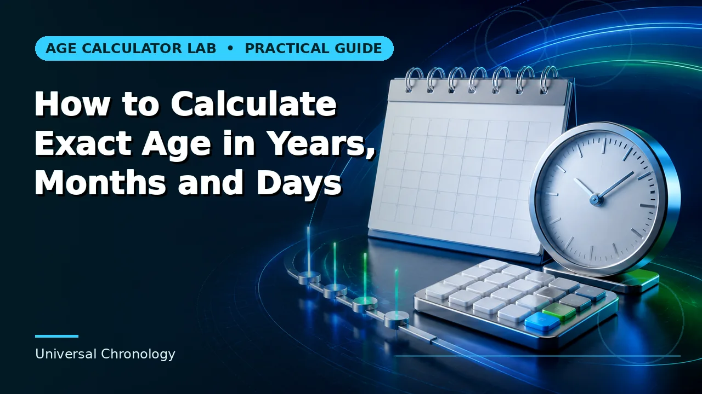
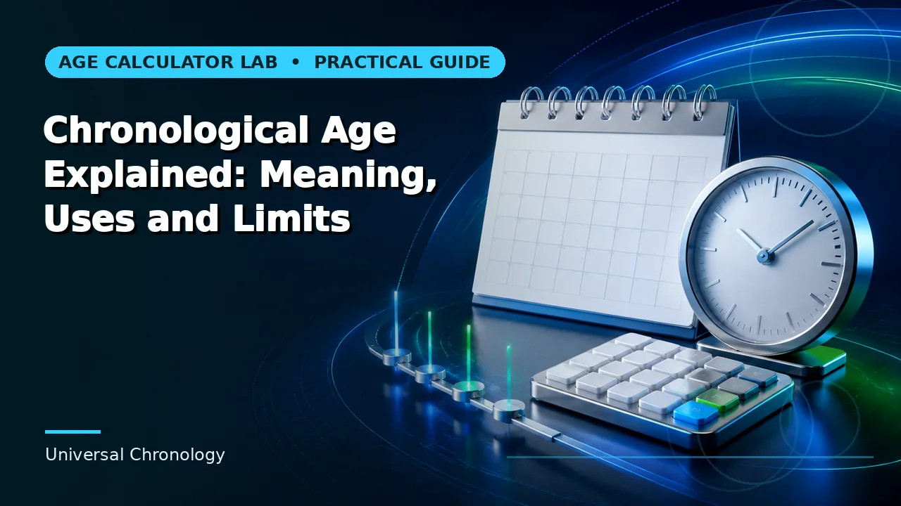
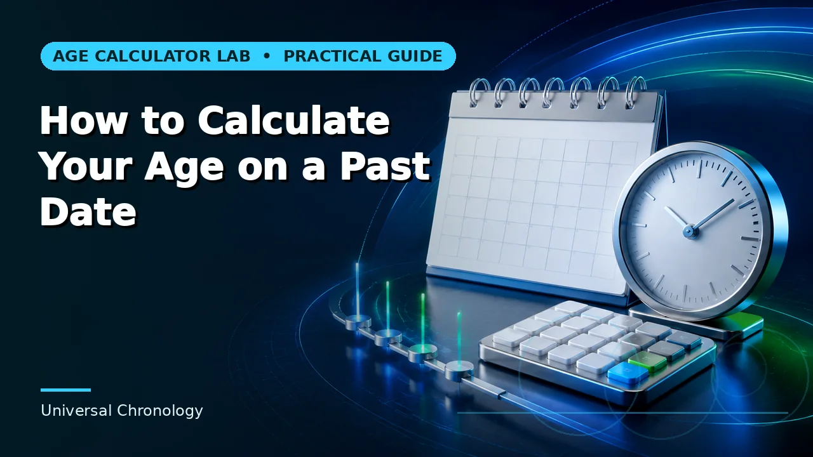
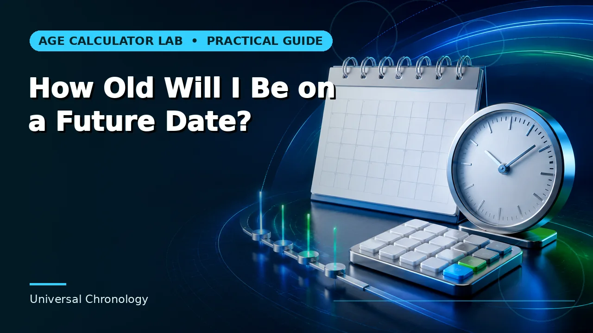
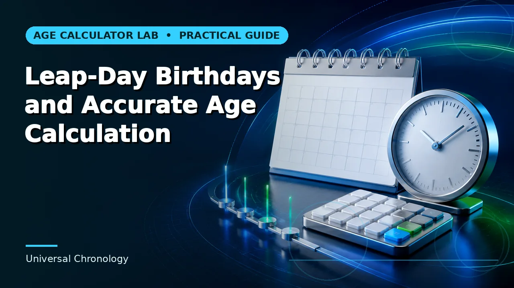
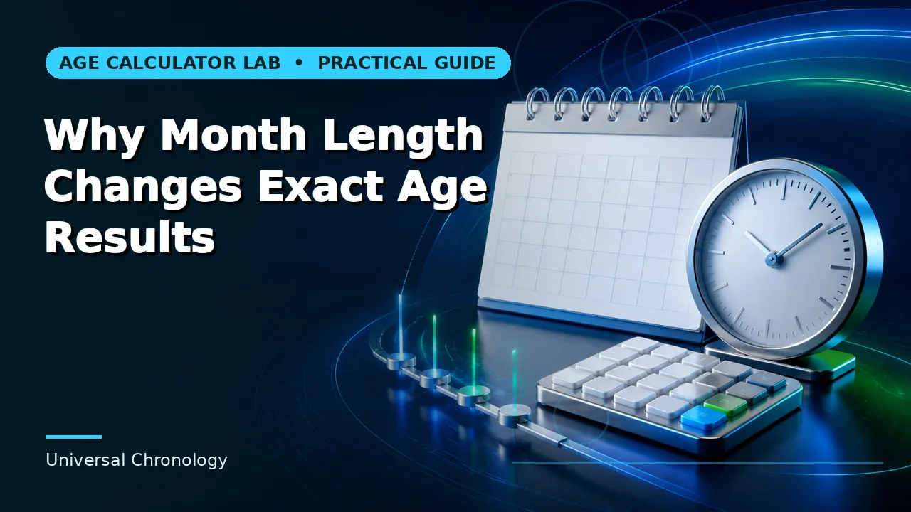
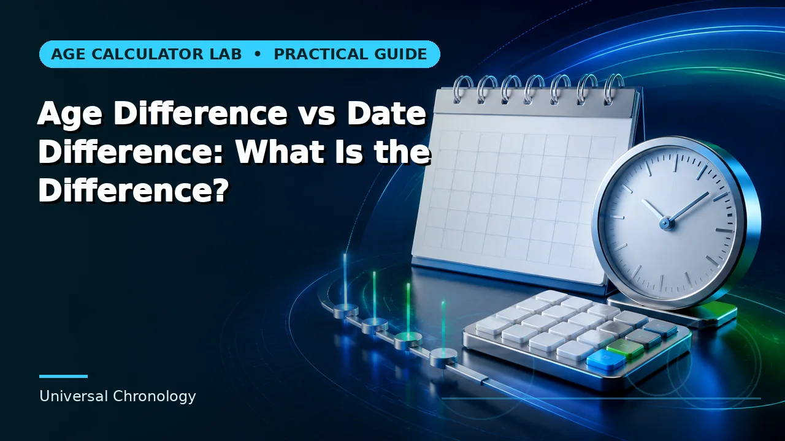
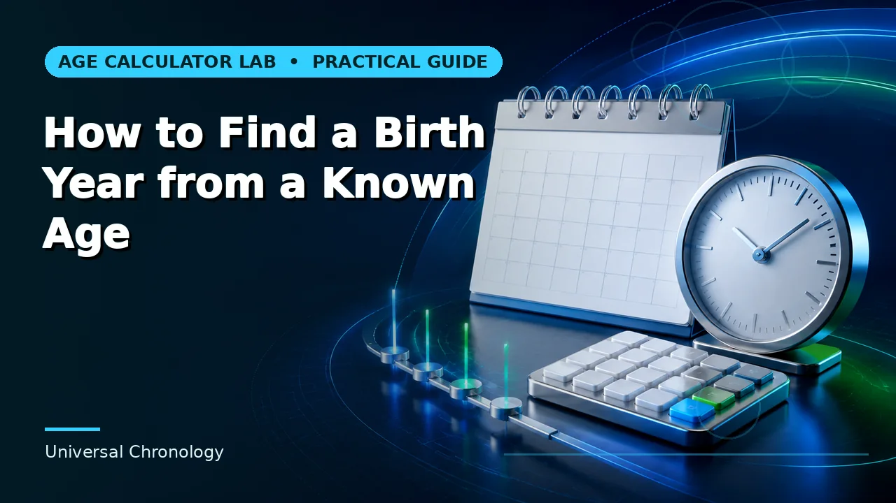

Clear methods
Every guide connects the answer to complete inputs, a reference date and the appropriate calculation method.

Navjeet writes and maintains practical guides that make age, date, milestone and planning calculations easier to understand.
Original educational articles written and maintained for Age Calculator Lab.

Exact age is a calendar interval, not a decimal estimate. Learn how complete years, calendar months and remaining days fit together.
Read guide →
Chronological age measures elapsed calendar time from a starting date to a reference date. It is objective, reproducible and different from developmental or biological age.
Read guide →
Calendar age preserves years, months and days, while decimal age expresses elapsed time as a fraction of an average year. They answer related but different questions.
Read guide →
A past-age calculation uses your date of birth as the start and the historical event date as the reference date.
Read guide →
Future-age planning compares a birth date with a specific future event, deadline or milestone date.
Read guide →
People born on February 29 still age continuously, but anniversary conventions in non-leap years can differ by context.
Read guide →
Months have 28, 29, 30 or 31 days, so month-and-day subtraction cannot safely use a fixed 30-day shortcut.
Read guide →
Age difference usually compares two birth dates, while date difference can compare any two calendar dates.
Read guide →
Age alone usually identifies a range of possible birth dates because the birthday may or may not have occurred in the reference year.
Read guide →